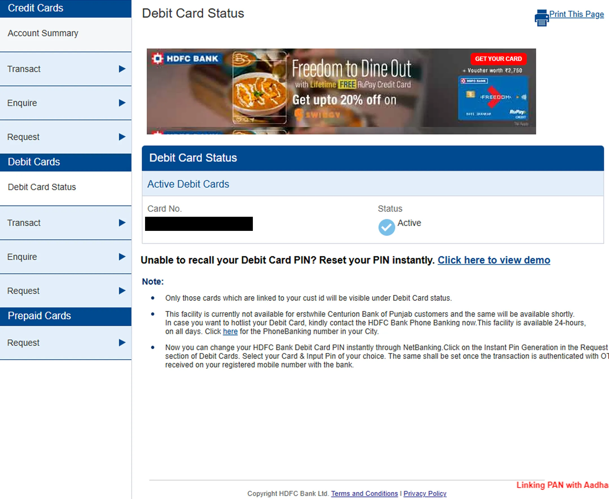
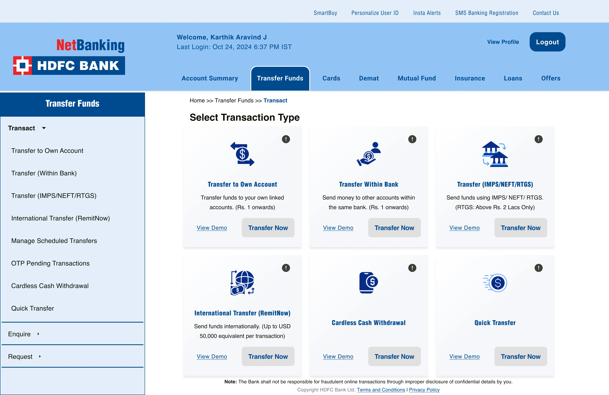
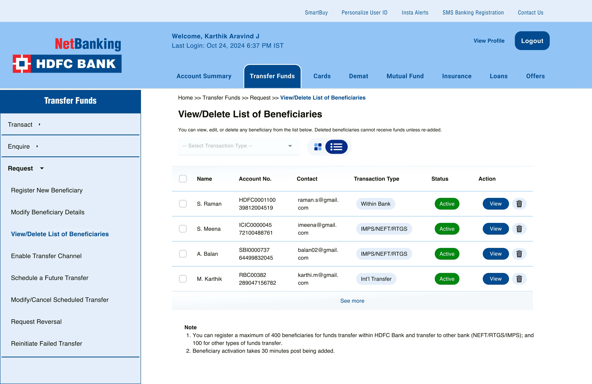
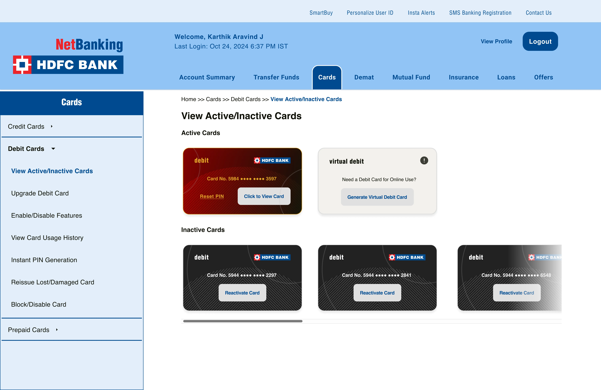

This redesign shows the process of managing beneficiaries in the HDFC Bank netbanking app. Many screens originally used repeated cards and tables that only appeared after user actions. In this project, all beneficiaries are visible in a single table with transaction types and activation status. Other pages with similar patterns were redesigned following the same approach.
Original Screens (as of July 2025)



My UI Redesigns



Related Content
November 12, 2025 • UX · Fintech